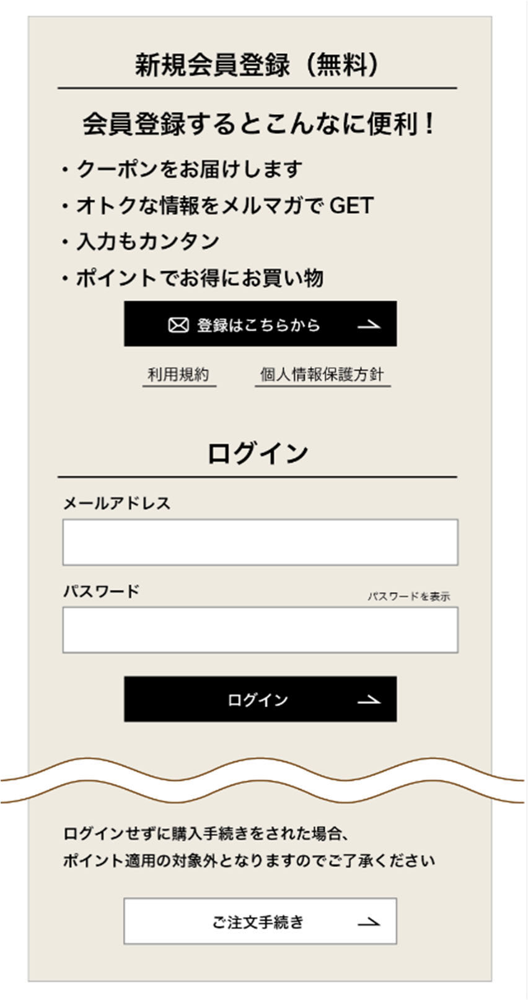

ダークパターン事例① 強制登録
会員登録（アカウントの作成を含む）を強制されるか、登録が必要だと思い込まされてしまうもの
【例】
- Ⓐ商品を購入するためには必ずしも会員登録をする必要はないが、スクロールをしなければ会員登録せずに購入するためのボタンが表示されないため、分かりにくい。
- Ⓑ「ご注文手続き」のボタンが、画面上側の「登録はこちらから」や「ログイン」ボタンよりも視覚的に目立ちにくく、会員登録が必須ではないことが認識しづらい。

架空のネットショップ「ご購入手続き」画面の再現です。会員登録は不要ですが、ゲスト購入への導線が下に隠れ、登録・ログインが目立つように配置されています。スクロールして操作してみてください。
example-shop.jp/checkout
同じ購入場面の改善例です。会員登録が任意であることを最初から示し、ゲスト購入と会員登録を同程度に選べるようにしています。
example-shop.jp/checkout
解説
会員登録は事業者にとってリピートやデータ取得に有利ですが、購入の条件ではありません。ダークパターンでは、登録・ログインを大きく見せ、ゲスト購入をスクロールの先や小さなリンクに追いやすく、登録必須と誤解させます。
改善では、任意であることを明示し、ゲスト購入を最初の画面で登録と同等の選択肢として並べます。押した結果が分かるフィードバック（デモでは下のメッセージ）があると、利用者が自分の意思で選べているか確認しやすくなります。